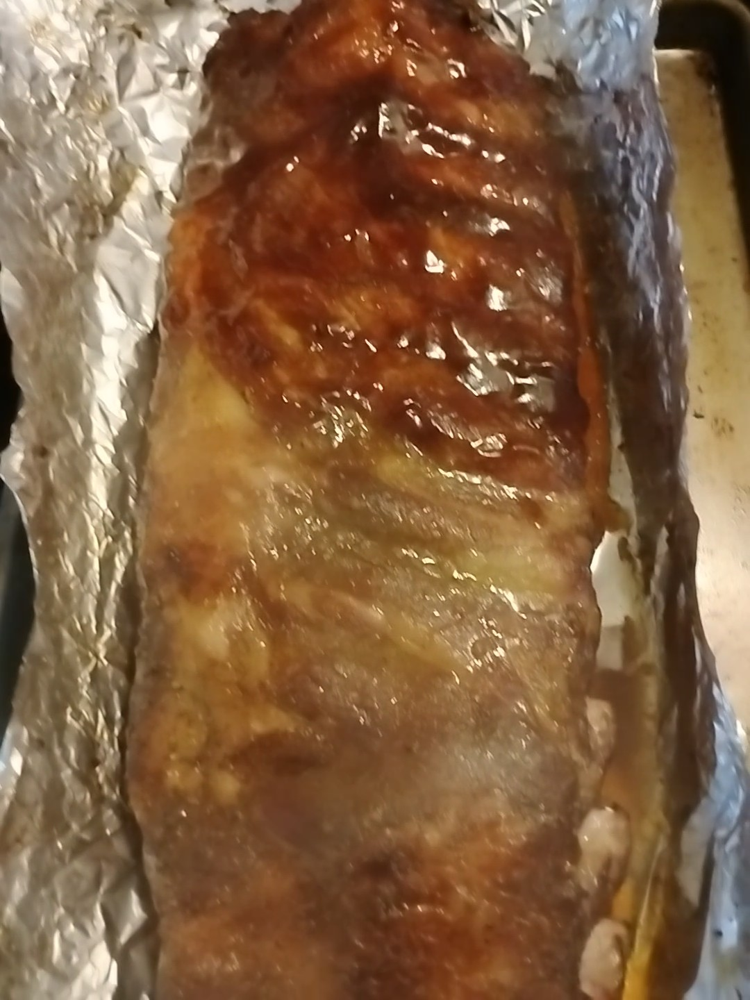

- Baby Back Ribs
- Mustard
- Paprika
- Salt
- Pepper
- Butter
- Brown sugar
- Honey
- BBQ Sauce
Prepping the Smoked Baby Back Ribs
To start things off remove the ribs from the packaging and place them on a sheet pan or cutting board meat side down. Remove the membrane covering the bone side from your ribs. You can slide a spoon underneath or use a paper towel to make it easier.
Spread some mustard onto the bone side of the ribs to use as a binder for your rub. Generously cover the ribs with your favorite BBQ Rub and pat them down. Next, you’ll just flip the ribs over and repeat these same steps to the other side.
Smoking the Baby Back Ribs
Just get your smoker preheated to 250 degrees and place the ribs on the top rack. Close the lid and allow them to cook for about an hour and a half without touching them.
After the first hour and a half a bark should start to form on the outside of the ribs and this is when I start to spritz them. Water in a spray bottle and spritz every 30 minutes.
Once the ribs have been cooking for about 3 hours we are going to pull them off and wrap them in foil. For this part just grab a sheet pan and lay down two layers of foil.
In the center of the foil place down 3-4 small pats of butter and sprinkle some brown sugar right over the top of your butter. Next, I like to drizzle some honey on top of that brown sugar and add on a sprinkle of BBQ rub.
To finish up, just wrap the ribs up tight in both layers of foil and place them back onto the smoker meat side down. We’re going to leave the temperature of the smoker at 250 degrees and let them cook wrapped for an hour.
Finally those delicious smoked baby back ribs are ready to unwrap and get saucy. Just remove them from the foil, brush your favorite BBQ sauce over the top and place them back on the smoker. Let them cook for another 30 minutes to an hour for the sauce to tack up and become nice and sticky!
